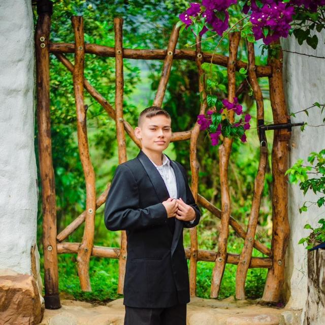

Proyecto de Vida

Nombre: Jose Guillermo Paul Diaz
Quién Soy:
Mi nombre es Jose Guillermo Paul Diaz y tengo 19 años. Actualmente estoy dando mis primeros pasos en el mundo de la programación en el Campuslands, donde estoy estudiando desarrollo de software. Mi mayor aspiración es convertirme en un programador exitoso, dedicando mis habilidades a diseñar programas que tengan un impacto positivo en la sociedad. Además, tengo el firme deseo de mejorar la calidad de vida de mi familia a través de mi trabajo y hacer de la programación mi profesión de por vida.
-
Completar mis estudios en Campuslands y obtener un título en desarrollo de software.
-
Obtener un empleo estable en el campo de desarrollo de software, preferiblemente en una empresa que promueva el crecimiento profesional y ofrezca oportunidades de aprendizaje continuo.
-
Ahorrar un porcentaje de mis ingresos para crear un fondo de emergencia y para invertir en mi desarrollo profesional, como la participación en cursos o la adquisición de herramientas y recursos necesarios.
-
Mejorar mi salud física mediante la adopción de hábitos alimenticios más saludables y la práctica regular de ejercicio, lo cual contribuirá a mi bienestar general y mi desempeño laboral.
-
Aprender un nuevo idioma relevante para mi campo, como inglés técnico, para poder comunicarme eficazmente con colegas y acceder a recursos y oportunidades internacionales.
-
Viajar a al menos tres lugares nuevos dentro de mi país, lo cual me permitirá conocer diferentes entornos culturales y ampliar mi perspectiva.
-
Establecer y mantener relaciones saludables con familiares y amigos, ya que el apoyo social es fundamental para mantener el equilibrio entre la vida personal y profesional.
-
Participar en actividades de voluntariado relacionadas con la tecnología y la educación en mi comunidad, para contribuir con mi conocimiento y habilidades hacia el beneficio colectivo y para desarrollar habilidades de liderazgo y trabajo en equipo.
-
Avanzar en mi carrera profesional obteniendo una promoción o un ascenso, especialmente en el campo del desarrollo de software, con el objetivo de convertirme en un desarrollador full-stack altamente capacitado y reconocido.
-
Mejorar constantemente mis habilidades de programación y adquirir nuevos conocimientos en tecnologías emergentes, como inteligencia artificial, aprendizaje automático y desarrollo de aplicaciones móviles, para ser innovador y exitoso en mi campo.
-
Iniciar un plan de inversión para el crecimiento financiero a largo plazo, con el objetivo de comprar una casa para mis padres y garantizar su estabilidad financiera en el futuro.
-
Continuar mi educación mediante la participación en cursos de desarrollo profesional y la obtención de certificaciones relevantes en el campo de la tecnología, lo que me permitirá mantenerme al día con las últimas tendencias y avances.
-
Desarrollar habilidades de liderazgo y gestión para poder liderar equipos de desarrollo de software y proyectos innovadores en el futuro.
-
Establecer un estilo de vida más sostenible, tanto en términos ambientales como financieros, contribuyendo positivamente al medio ambiente y asegurando mi bienestar económico a largo plazo.
-
Cultivar relaciones significativas y duraderas con familiares, amigos y colegas, manteniendo una red de apoyo sólida y profesional, sin necesidad de enfocarme en una relación de pareja en este momento.
-
Convertirme en un CEO reconocido en el ámbito de la tecnología, liderando una empresa innovadora y exitosa en el sector del desarrollo de software.
-
Participar activamente en competiciones de programación de alto nivel, como hackatones y concursos de desarrollo, demostrando mis habilidades técnicas y creativas ante la comunidad tecnológica.
-
Contribuir al bienestar de mi comunidad a través de proyectos sociales o iniciativas benéficas que utilicen la tecnología para resolver problemas y mejorar la calidad de vida de las personas.
-
Establecer mi propio negocio o emprender un proyecto que me apasione, buscando oportunidades de innovación y crecimiento en el mercado tecnológico.
-
Continuar creciendo personal y profesionalmente, manteniéndome al día con las últimas tendencias y avances en el campo del desarrollo de software, y buscando oportunidades de aprendizaje y desarrollo constantes.
-
Explorar oportunidades de viaje a nivel internacional para expandir mi visión y conocimiento, y conocer diferentes culturas que enriquezcan mi perspectiva personal y profesional.
-
Mantener una buena salud física y mental a medida que envejezco, priorizando el cuidado de mi bienestar en todas las etapas de la vida para poder seguir contribuyendo de manera significativa al mundo tecnológico y a mi comunidad.
Acciones y estrategias para alcanzar estas metas:
-
Desarrollar meticulosamente un plan de acción detallado, estableciendo plazos específicos para cada objetivo que me permitan medir mi progreso de manera efectiva.
-
Proactivamente buscar mentoría y guía de profesionales exitosos en las áreas de desarrollo de software, tanto en el back-end como en el front-end, para nutrir mi crecimiento profesional y ampliar mis habilidades.
-
Continuar mi formación y actualización constante mediante la inmersión en la lectura de material técnico especializado, la participación activa en cursos relevantes y la asistencia a conferencias que aborden las últimas tendencias y avances en tecnología.
-
Establecer una sólida red de apoyo con amigos y familiares, así como con colegas y compañeros de estudio, para recibir estímulo, consejo y motivación en mi trayectoria profesional.
-
Mantener una actitud flexible y adaptable, estando siempre dispuesto a ajustar mi plan según las exigencias del entorno y los cambios en la industria tecnológica.
-
Reconocer y celebrar cada logro alcanzado en mi camino de desarrollo profesional, extrayendo valiosas lecciones de los desafíos y fracasos que puedan surgir en el proceso.
-
Cultivar y mantener una actitud positiva y perseverante ante los obstáculos y adversidades, recordando constantemente mi visión y propósito en la vida como motor de inspiración y motivación.